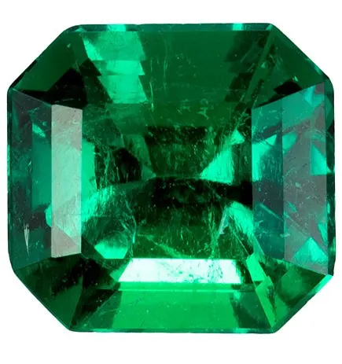

贊比亞與巴西祖母綠：新興產地崛起
哥倫比亞不是唯一的天花板——贊比亞的深綠與巴西的明亮，正在改寫祖母綠的世界地圖。

核心定義
祖母綠的產地版圖，早已不是哥倫比亞獨霸：贊比亞（非洲）與巴西（南美）是當今最重要的兩大新興產地。贊比亞的 Kagem 礦是全球最大單一祖母綠礦，產量與品質並重；巴西則以「明亮綠」與多樣礦區著稱。
贊比亞祖母綠顏色偏深綠（鐵含量高）、常帶藍綠底調，克拉數大、品質穩定；巴西祖母綠顏色偏明亮、偏黃綠，產地分布廣（米納斯吉拉斯州等）。兩者價格相對哥倫比亞親民，是祖母綠市場的性價比主力。
特徵與分類
| 產地 | 顏色氣質 | 特徵 | 市場地位 |
|---|---|---|---|
| 哥倫比亞 | 濃綠（木佐標竿） | 三相包裹體 | 頂級溢價 |
| 贊比亞 | 深綠、偏藍綠 | 鐵高、片狀包裹體 | 性價比主流 |
| 巴西 | 明亮、偏黃綠 | 產地多樣 | 中價位 |
贊比亞祖母綠的崛起改變了市場：它的深綠穩重、透明度佳，加上產量穩定，讓「非洲綠」成為婚戒與高階珠寶的可靠選擇。巴西祖母綠則以亮色與親民價格，吸引預算型買家。
科學原理
贊比亞祖母綠的深色來自高鐵含量：鐵讓綠色更深沉，但也可能帶藍灰底調。它的形成環境是高溫變質型（與片岩相關），內含物以片狀包裹體、針狀物為特徵——與哥倫比亞的三相包裹體截然不同。
巴西祖母綠的綠色多來自釩（而非鉻），顏色偏黃綠、明亮；不同礦區的釩鉻比例不同，顏色從淺綠到深綠都有——巴西是「色彩最多樣」的祖母綠產地。
鑑定與鑑別方法
- 顯微鏡看內含物：贊比亞片狀包裹體 vs 哥倫比亞三相包裹體
- 看顏色：贊比亞深藍綠、巴西明亮黃綠
- 微量元素分析（實驗室）確認產地
- 對照權威報告的 origin 欄位
- 品質與價格對照：贊比亞性價比高，但也要看具體品質
市場行情與保養建議
行情上，贊比亞祖母綠因「品質穩定＋產量充足＋價格親民」成為市場主流：同樣預算，能在贊比亞買到比哥倫比亞大得多的祖母綠。巴西祖母綠則在中價位市場活躍，適合日常珠寶。
選擇建議：追求「綠的深邃」與性價比，選贊比亞；追求「綠的明亮」與預算友好，選巴西；追求收藏敘事與頂級溢價，再考慮哥倫比亞——先看顏色，再看產地。
常見誤區
贊比亞祖母綠品質已達高端，甚至屢獲 GIA 高評價；它只是「顏色路線不同」，不是「等級更低」。產地不等於品質。
任何產地都有頂級與一般之分。一顆頂級贊比亞祖母綠勝過平庸的哥倫比亞貨——產地是標籤，眼睛看到的美才是答案。
冷知識
這個位於贊比亞北部的礦區，年產量居世界前列，為全球市場穩定供應高品質祖母綠——「非洲綠」已是祖母綠世界的半壁江山。
從米納斯吉拉斯到巴伊亞，巴西的祖母綠礦床遍布各地，產地多樣性讓它的顏色風格千變萬化。
反直覺觀點
贊比亞的深綠藍調在戒枱上沉穩內斂，許多人覺得比木佐的豔綠更「高級」——美是主觀的，產地溢價買不到你的審美。
同樣品質的贊比亞祖母綠可能只有哥倫比亞的六成價格——理性買家反而利用這個「迷思溢價差」買到更大更好的祖母綠。